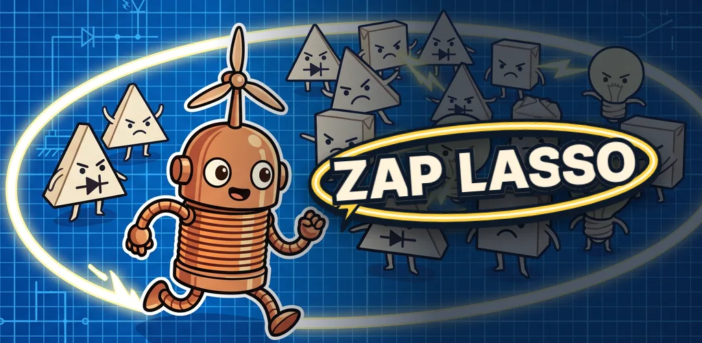

mcpmcp · MCP Lab · 비개발자mcpmcp · MCP Lab · non-developer
게임과 도구를,
AI 팀과 함께 만듭니다.
Games and tools,
built with an AI team.
에너지 사업개발 일을 하며 AI 코딩 에이전트 팀으로 게임·자동화·도구를 만듭니다. 코드는 제가 직접 쓰지 않고 무엇을 만들지 정하고 고르기만 해요. 아래는 그렇게 만든 것과 만드는 방식입니다. I work in energy project development and build games, automations, and tools with a team of AI coding agents. I don't write the code myself. Here is what I've made and how.
게임 해 보기Play the games LinkedIn 바로가기LinkedIn 운영 중인 사이트Sites I run
- 3브라우저에서 바로 되는 게임games you can play in the browser
- 50일을 나눈 영역(스트림)areas (streams) the work is split into
- 1,400AI가 짠 파이썬 파일, 주인 없는 파일 0Python files written by AI, each owned by a single area
숫자는 2026-10-23 기준Numbers as of 2026-10-23
바로 해 보는 게임Games you can play now
누르면 브라우저에서 바로 열립니다. 무료, 광고 없음. 1인 회사 MCP Lab 이름으로 냅니다.Opens right in your browser. Free, no ads. Published under my one-person studio, MCP Lab.

잽 라쏘Zap Lasso
생존 액션Survival action
지나간 길이 전선이 됩니다. 적 떼를 한 바퀴 감싸면 한꺼번에 감전.Your path becomes a live wire. Loop around a swarm to zap them all at once.
WebWindows
바로 하기Play →칼퇴 원정대Clock-Out Heroes
방치형 RPGIdle RPG
동물 회사원 원정대가 회사 괴물을 무찌르며 층을 올라갑니다. 목표는 칼퇴.A squad of animal office workers fights office monsters floor by floor. The goal: leave on time.
WebWindows한국어·영어Korean · English
바로 하기Play →저승차사Jeoseung Chasa
핵앤슬래시Hack-and-slash · Korean underworld
한국 저승의 요괴를 베며 던전을 내려갑니다. 끝에는 소머리 대장 우두나찰이 기다립니다.Play as a reaper of the Korean underworld (that's what "Jeoseung Chasa" means) and cut your way down to the bull-headed boss.
WebWindows한국어·영어·일본어Korean · English · Japanese
바로 하기Play →운영 중인 사이트Sites I run
데이터는 봇이 매일 모아 자동으로 갱신합니다. 둘 다 무료로 열려 있습니다.Bots collect the data and update both sites every day. Both are free to use.
김프보드Kimpboard kimpboard.com
한국 투자자가 아침에 30초 보고 가는 시장판입니다. 한국 증시가 과열인지 싼지, 서울·수도권 대장 아파트 흐름, 미국 빅테크가 쓰는 돈이 어느 한국 부품사로 흘러가는지를 한 화면에 모았습니다. 연도를 가린 과거 차트로 1년을 버티는 게임 '블라인드 차트'도 여기 있습니다.A 30-second morning dashboard for Korean investors: whether the Korean market looks overheated or cheap, Seoul-area apartment trends, and where US big-tech spending flows into Korean suppliers. Also home to Blind Chart, a game where you survive a year of real market history with the year hidden.
게임: 블라인드 차트Game: Blind Chart주식Stocks부동산Real estate한국어Korean
LNGBOARD lngboard.com
한국과 미국의 전력·LNG 공개 데이터를 한곳에 모은 에너지 데이터 사이트입니다. 전력 도매가격, 발전 연료 구성, LNG 도입 가격, 발전소 거래를 보고 현업 시각으로 풀어 씁니다. 발전소를 직접 굴려 보는 시뮬레이션 게임 '스파크 스프레드'도 여기 있습니다.An energy data site that brings Korean and US power and LNG public data into one place: wholesale power prices, generation mix, LNG import prices, and power-plant deals, explained from an industry point of view. Also home to Spark Spread, a game where you run a gas power plant yourself.
게임: 스파크 스프레드Game: Spark Spread전력PowerLNG한국·미국Korea · US
공개 소스 프로젝트Open-source projects
stream-harness
AI 코딩 에이전트 여럿에게 일을 맡길 때 쓰는 운영 틀. 일을 '스트림'으로 나누고 스트림마다 지도 한 장(현황·파일·함정·규칙)을 둡니다. 템플릿과 점검 도구가 들어 있습니다.An operating harness for running several AI coding agents. Work is split into "streams", each with a one-page map of status, files, pitfalls, and rules. Includes templates and a checker.
만드는 방식How it's built
- 코드는 전부 AI가 씁니다AI writes all the code
저는 무엇을 왜 만들지 정하고, 결과를 보고 고르기만 합니다. 게임·사이트·봇 코드는 전부 AI(주로 클로드 코드)가 짰고, 게임 그림도 AI(제미나이)로 만들었습니다.I decide what to build and why, then review and choose. Every game, site, and bot was written by AI, mostly Claude Code, and the game art was made with AI (Gemini) too.
- 일을 50개 영역으로 나눕니다Work is split into 50 areas
영역마다 지도 한 장을 두고, 파이썬 파일 1,400개가 전부 어느 한 영역에 속하게 합니다. 주인 없는 코드는 점검이 막습니다.Each area has a one-page map, and every one of 1,400 Python files belongs to exactly one area. A check blocks orphaned code.
- 결과물은 평가단이 먼저 봅니다A review panel sees it first
게임 한 판, 기획서 한 장도 생각이 서로 다른 가상 위원 3~7명이 따로 점수를 매긴 뒤에 제게 옵니다.Even a single game build or plan is scored separately by 3–7 simulated reviewers with different viewpoints before it reaches me.
- 고장은 AI가 먼저 찾습니다AI finds breakage first
집 PC 한 대에서 자동화가 하루 종일 돌고, 매일 점검이 이상을 찾고, 정기 자동수리가 오류를 손봅니다.Automations run all day on one home PC; daily checks flag problems and a scheduled auto-repair fixes errors.